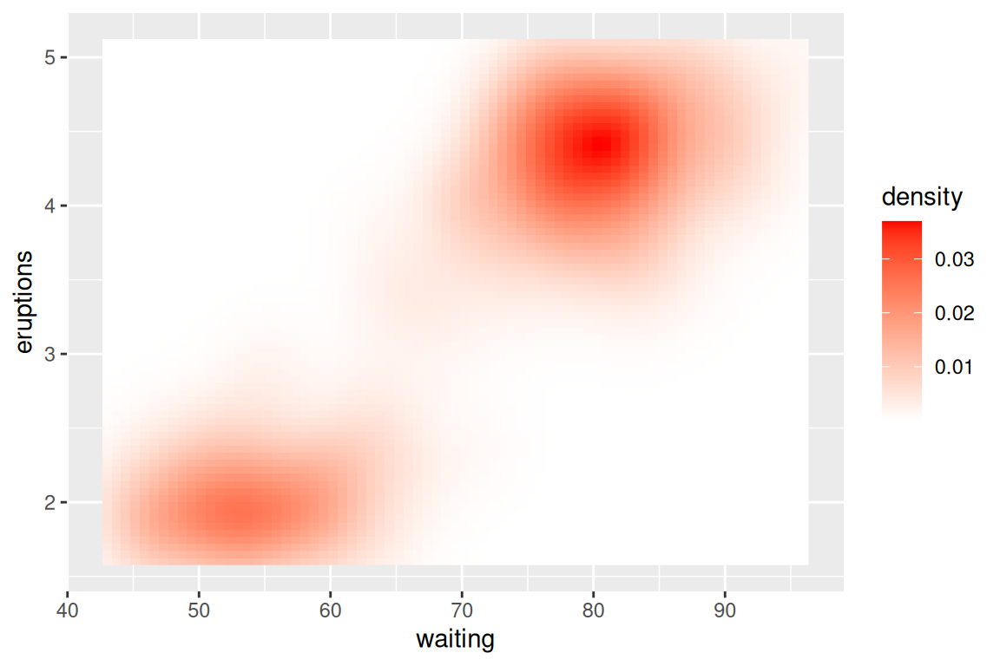

library(RColorBrewer)
display.brewer.all() 
When evaluating the power and efficiency of a plot, color is always a key factor that sometimes speaks a language even louder than words. So in this chapter, you will be introduced with several widely-applied color schemes and get to know how to use proper colors to make better plots based on different features of your data.
RColorBrewer is an R package having built-in sensible color schemes ready-to-use for figures. Colors are grouped into three types: sequential, diverging, and qualitative.
Sequential – Light colours for low data, dark for high data
Qualitative(for categorical data) – Colours designed to give maximum visual difference between categories so great for non-ordered categorical data
Diverging – Light colours for mid-range data, low and high use dark colours, great to seperate two extremes
library(RColorBrewer)
display.brewer.all()
Here is an example of plotting categorical data using Dark2 pallets under qualitative group of RColorBrewer:
library(ggplot2)
ggplot(iris, aes(Petal.Length, Sepal.Length, colour = Species)) +
geom_point() +
scale_colour_brewer(palette = "Dark2")
Also, you can create your own sequential pallets.
ggplot(faithfuld, aes(waiting, eruptions, fill = density)) +
geom_raster() +
scale_fill_gradient(low = "white", high = "red")
Or diverging pallets:
ggplot(faithfuld, aes(waiting, eruptions, fill = density)) +
geom_raster() +
scale_fill_gradient2(low = "grey", mid = "white", high = "red",midpoint = .02)
For discrete data, using scale_colour_manual is a good choice. For discrete ordinal data, we can use another package (such as vcd)
ggplot(mtcars, aes(mpg, wt)) +
geom_point(aes(colour = factor(cyl))) +
scale_colour_manual(values = c("red", "yellow", "blue"))colors<-brewer.pal(5,'Blues')
barplot(1:5, col=colors)
The viridis R package provides four palettes for use in R which are pretty, perceptually uniform and easy to read by those with colorblindness.
The package contains eight color scales: viridis, the primary choice, and five alternatives with similar properties - magma, plasma, inferno, civids, mako, and rocket -, and a rainbow color map - turbo.
Perceived differences are proportional to scalar differences when using viridis. The following example shows viridison continuous data using scale_color_viridis_c, use scale_color_viridis_d() for discrete data
library("viridis")
ggplot(iris, aes(Sepal.Length, Sepal.Width))+
geom_point(aes(color = Sepal.Length)) +
scale_color_viridis_c()